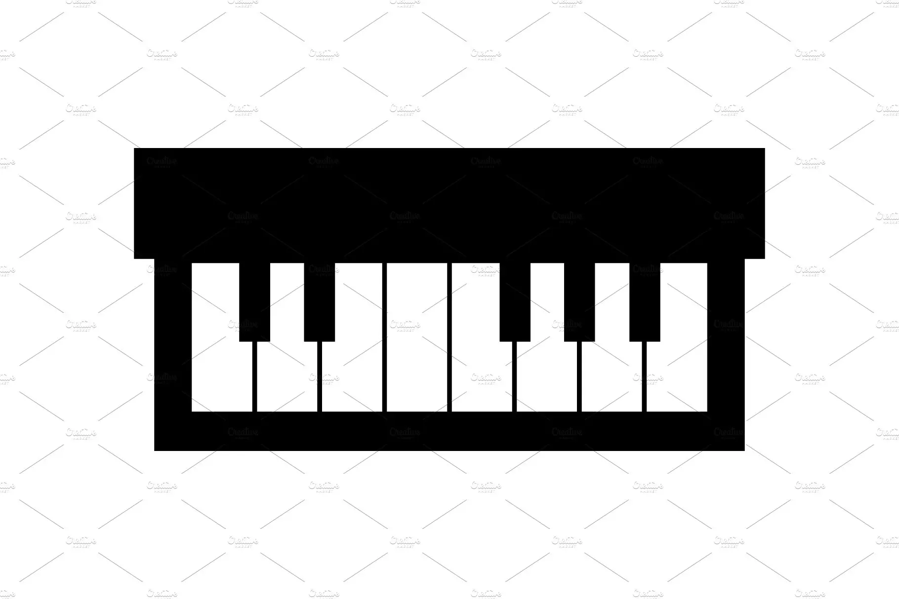

Μουσική
Προγραμματισμός
Gaming

Piano
Piano
ΟΝΟΜΑ: ΝΤΑΒΙΝΤ
ΕΠΙΘΕΤΟ: ΚΟΒΑΛΣΚΙ
ΑΡΗΘΜΟΣ ΜΗΤΡΩΟΥ: Π22248
ΤΜΗΜΑ: ΠΛΗΡΟΦΟΡΙΚΗΣ
ΤΟΠΟΣ ΓΕΝΝΗΣΗΣ: ΑΘΗΝΑ
Ονομάζομαι Ντάβιντ και έχω γεννηθεί το 2002 στην Ελλάδα.
Ασχολούμαι με τον προγραμματισμό και τις ξένες γλώσσες.
Έχω τελειώσει ελληνικό και πολωνικό λύκειο και αυτήν την στιγμή σπουδάζω στο Πανεπιστήμιο Πειραιά.
Ενδιαφέροντα